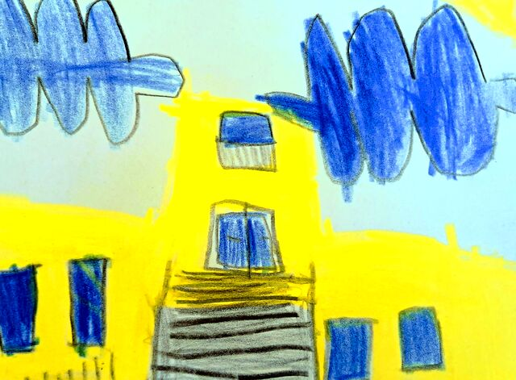
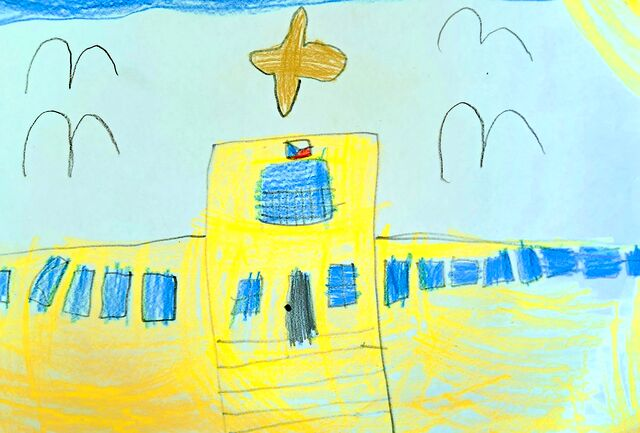

Fyzioterapeut
Vyšetření dětí zaměřené na správné držení těla a pohybový vývoj.
Dlouhodobé projekty, spolupráce s odborníky a s organizacemi v Žabovřeskách i v celém Brně. Díky nim děti zažijí techniku, přírodu a umění v reálném světě.
Dlouhodobé projekty


Spolupráce s odborníky
Vyšetření dětí zaměřené na správné držení těla a pohybový vývoj.
Vyšetření zraku ve spolupráci se zdravotnickým zařízením PrimaVizus.
Studenti zubního lékařství LF MU seznamují děti s pravidly dentální hygieny.
Spolupráce se speciálními pedagogy a výchovnými poradci podle potřeb dětí.
Spolupráce s organizacemi
Děti díky partnerům zažijí techniku, přírodu i umění v reálném světě.
Podívejte se na režim dne, vybavení školky a zahradu, kde děti tráví většinu dopoledne.